開發誌 · 2026-11-19 · 系列（十一）真的房間
真的房間，AI 的主持人
上一篇（十）人物細緻度寫到，主持人從主播台搬進了一間有大窗的書房， 一年四季換窗景、換衣服。做到這裡，頻道主看完還是說了一句： 「我還是感覺電腦產生出來的影片，有那種感覺。」他接著說，也許在定妝照那一刻，就要找出原因。
這一篇記錄接下來兩天走的路：先把「CG 感」量出來，然後換了一個做法—— 背景用真的照片，AI 只負責生成主持人。這條路走到哪裡，我們也還不知道；開發誌的任務，就是把一路走過來的樣子記下來。
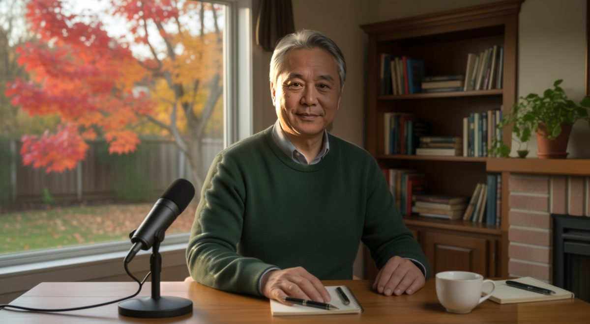
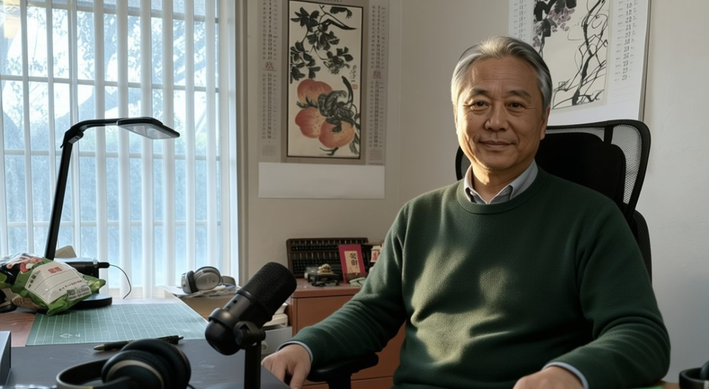
先量：CG 感從哪裡來
我們拿自己的定妝照量，再請研究助手查了靜態圖和講話影片各一輪。量出來的三件事：
- 臉比衣服清楚太多。真的相機拍一個人，臉和同距離的毛衣清晰度差不多；我們的定妝照，臉比毛衣清楚 10 倍以上， 最新的一版到 22 倍。原因是我們自己——為了「歲月感」替臉加了皮膚紋理，結果像把一張臉貼上去。
- 定妝照是一路改出來的。換房間、換頭髮、貼臉、打光，一步接一步改同一張圖。研究指出指令式修圖每改一次就掉一點細節、邊緣變硬， 越改越假。
- 窗外太「漂亮」。真的相機對著室內曝光，窗外會亮 2～3 格、顏色變淡；我們的秋景窗外只比臉亮半格、楓葉很鮮豔——那是 HDR 合成的感覺。
轉折來自一個意外的對照：有一段試做的影片，起點和終點用的是頻道主自己用手機拍的照片，他看完說那是到目前為止最像真的。 同樣的影片模型、同樣的顯示卡，差別只在起點是一張真照片。於是決定：不再讓 AI 畫房間，只拍房間照片。
不需要漂亮的房間
頻道主第一個反應是：「我不會有這麼漂亮的房間。」但這正是重點——真照片會真，是因為它普通、不完美： 有點亂的桌子、平凡的牆、不夠亮的角落。我們之前那間很漂亮的書房，本身就是 CG 感的一部分。拍法只有幾條：
- 手機橫拿、用 1 倍鏡頭，高度是坐著時的眼睛，用腳架或疊書固定。
- 白天、不開燈，只用窗戶的自然光；空椅子在畫面中間，桌上照平常的樣子，不必整理。
- 家人照片、有名字的文件、窗外看得到門牌或車牌的，一律先收起來或避開。
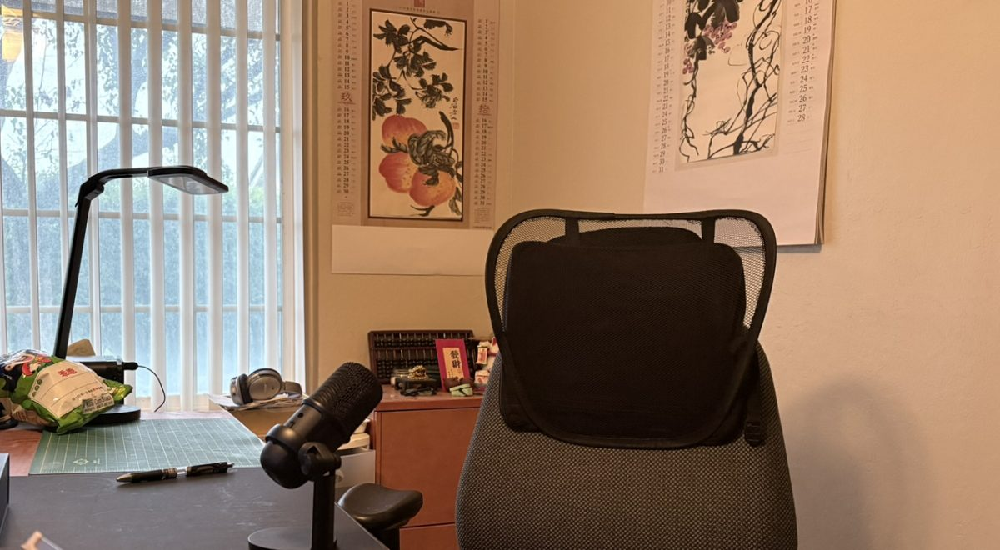
把人放進照片
這一步試了兩種做法都不理想：
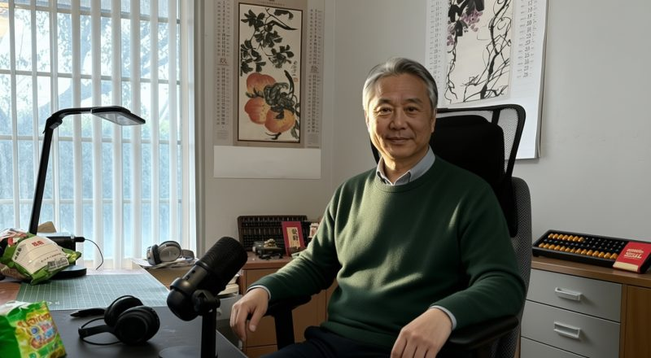
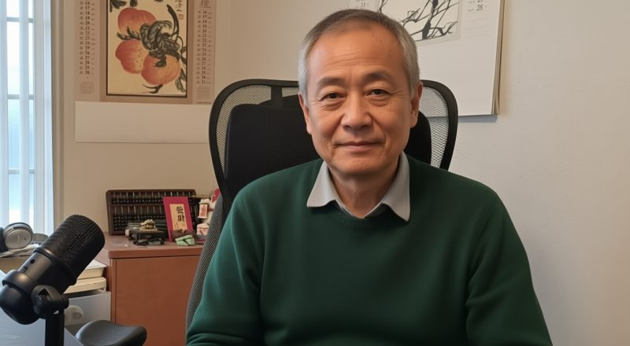
最後是頻道主自己從候選裡挑了一張，說「左邊可以再多一點」，我們把畫面往左延伸。 要老實記一筆：這張的背景是模型照著房間重畫的，不是原始照片的像素，頻道主看過覺得可以。 另一個決定是鏡頭拉近到胸口以上——他不希望畫面暴露房間太多細節。
接著是光。頻道主的想法很具體：「臉先看外面，會先得到光；轉過來時只剩一側有光，更生動。」 我們用自己的打光工具，只讓靠窗那半邊臉亮一點、另一半留在陰影裡，臉沒有重畫，也沒有再加皮膚紋理。
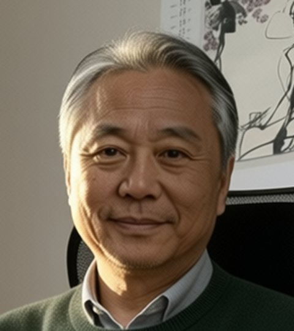
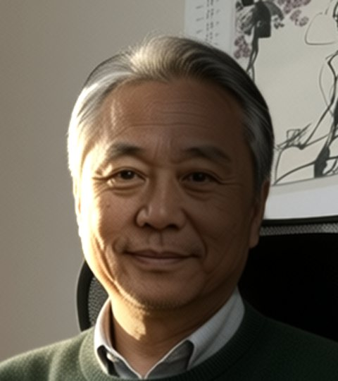
先看窗外，再開口
頻道主要的順序是：目光先看窗外，然後轉過頭來，再講這句話。做法是兩段接起來： 先用影片模型做一段「看窗外、轉回來」（頭尾都是同一張定妝照），再接上對嘴的講話片段，接點用不到四分之一秒的淡化。 語速也調了：原速太快，慢 15% 又太慢，最後定在 92%。他看完說：真實感可以。
真的走進來、走出去
以前主持人出場是淡入、淡出。這次頻道主說：能不能讓他真的走進來、走出去？試試看也無妨。 片頭是：貓從空椅子跳下來 → 主持人走進來坐下 → 看一眼窗外、轉回鏡頭。片尾倒過來：起身走出去 → 貓跳上空椅子窩著 → 燈光慢慢暗下來。 每一段的起點和終點都是同一張圖（空椅子、有貓的椅子、坐好的主持人），所以接起來不會跳。
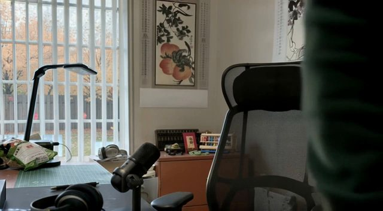
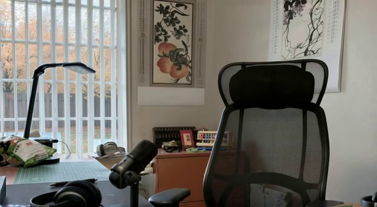
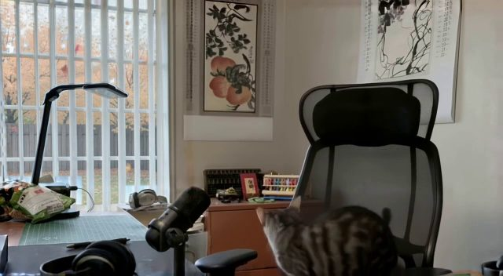
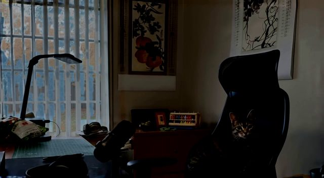
上一篇遇過的老問題還在：坐下和起身的時候，人會往鏡頭湊。做法照舊——量每一格臉有多大，太大的幾格剪掉，用不到半秒的淡化接起來。
季節只換窗外
房間是一張照片，季節要怎麼換？頻道主說：旁邊那扇窗，窗外的景還是可以換。於是一年四季的房間、人、動作都不變，只換窗外。
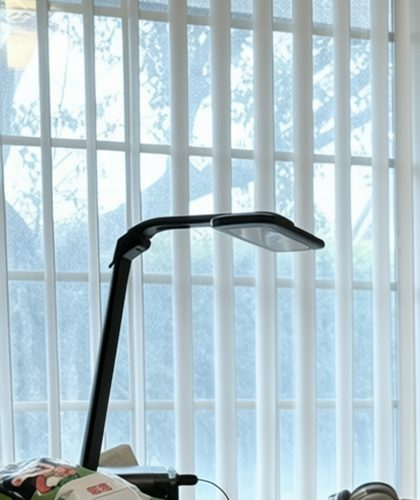
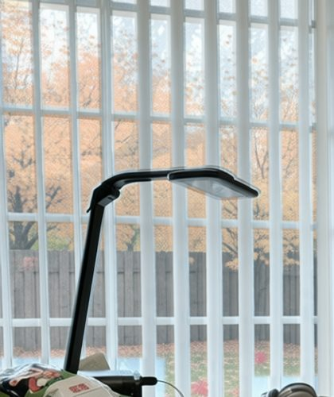
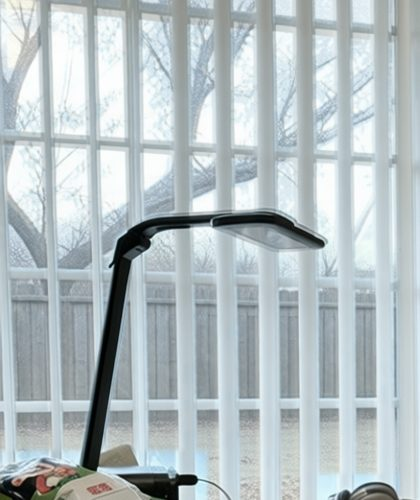
- 只改窗外。修圖模型只改百葉後面的景；跟原照片一比，差很多的地方就是窗外，這一塊做成遮罩。檯燈、百葉、桌上的東西都留在前面。
- 顏色要淡。模型畫出來的秋天太鮮豔，跟原照片那層亮亮的霧混一半，才像手機對著室內曝光拍到的窗外。頻道主另外交代：紅葉要小一點、不要搶戲。
- 窗外會動。再用影片模型讓樹枝輕輕擺、偶爾飄一兩片葉子，做成幾秒鐘的循環。主持人每一格畫面在合成時，窗外都換成這段循環。
- 擋在窗前的東西要留下。每一段動作都先算出「平常的樣子」，跟它差很多的地方（人、貓）就保留原本的像素，窗景只貼在後面。
一集裡，動作不重複
書房主持人第一次進節目，頻道主看完其中一則就抓到：右邊那一格主持人的動作，怎麼一直重複？ 一查，書房這一套不講話的動作只做了 6 段，那一格一集露臉 13 次，每一段被用了 2～6 次； 而且排法是照整集的時間輪播，沒露臉的時候也在往下播，每次露臉常常從某一段的中間切進來。
他要的是：做成一個 18 段的片庫，一集裡不要有重複的動作。我們照上一代秋季書房那 18 個動作一一對應去做，結果一半以上要重做：
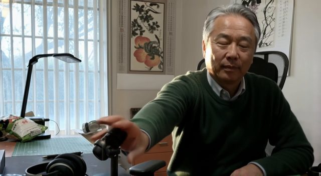
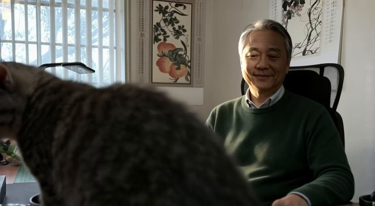
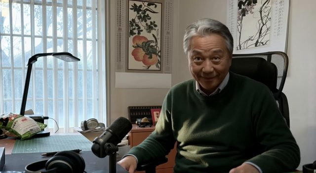
- 書房的桌子離椅子有一段距離。調麥克風、寫筆記、翻頁、擺正筆記本——要伸手拿桌上東西的動作，五次裡四次往鏡頭湊（臉變大 14%～27%），剩下那次翻頁，紙張憑空出現、在空中亂飄。 這是房間本身的限制，不是指令寫不好，所以換成手不離身的動作：深呼吸、雙手交握、低頭點一下、抿嘴搖頭。
- 「點頭」和「看螢幕」很容易被演成大笑。不講話的片段裡嘴巴一動，就像在說話。指令加上「嘴唇抿著、不笑」，第三次才過。
- 貓要小、要遠。改成一隻小貓跳上桌子靠窗的那一端，主持人轉頭看牠。
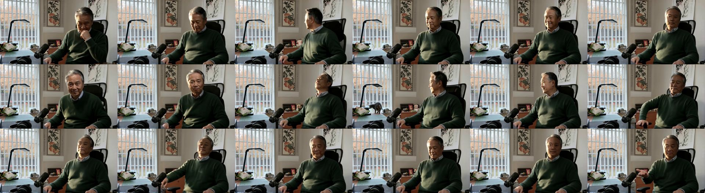
排法也改了：開始合成之前，先掃一遍整集，找出那一格會露臉的時段；每次露臉都從一段新的動作的開頭播， 順序每一集打亂一次，整套用完才重洗。重做之後，那一集的 15 次露臉是 15 個不同的動作。
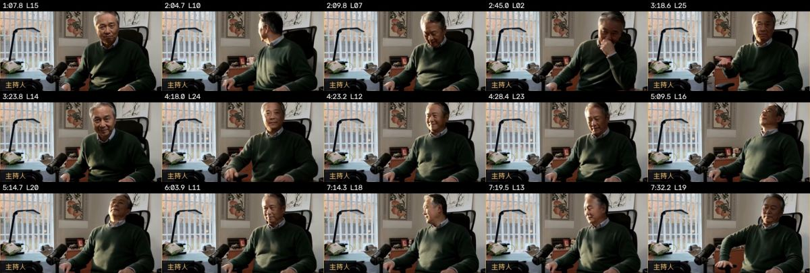
有了 18 段，冬天就簡單了：同一批動作，只把窗外換成冬天，一個晚上做完。
算力與一張壞掉的卡
講話的片段照（九）的做法，在雲端租一台 RTX 5090 算：第一集 8 段、共 48 秒的講話，約半小時算完；其中三段臉不夠像，換種子重做又花了十幾分鐘。 不講話的動作和窗景在本機那張卡上做，不花錢，只是慢。
這次第一台租到的是壞卡：系統看得到顯示卡，程式卻抓不到，模型下載完一啟動就當。白付了大約 0.2 美元之後， 多了一條開機規矩：開機第一件事先測顯示卡，測過才下載。整集主持人的雲端費用，連壞卡在內大約 0.9 美元。
還不知道會走到哪
這一步解決了「房間像 CG」，但影片本身還有沒試的方向：講話片段目前是從一張靜止的圖做出來的，身體比較僵； 主持人片段和節目其他畫面的質感也還不完全一樣。研究清單上還有「讓一段會動的影片對嘴」「統一加上鏡頭與底片的收尾」幾條，等著一條一條試。
比較確定的是下一步：每一季在同一個位置、同一個高度再拍一次，窗外就是真的季節，不必再請 AI 畫楓葉或梅花。
主持人怎麼放進節目，見（七）數位主持人； 上一代的書房與季節造型見（十）人物細緻度； 工具清單見附錄：工具清單。
本頻道由 AI 協助製作與記錄，選題、判斷與觀點出自頻道主本人。本文圖片中的主持人為 AI 生成之原創人物， 背景房間為頻道主書房的照片；節目中出現時一律標示「AI 生成主持人」。